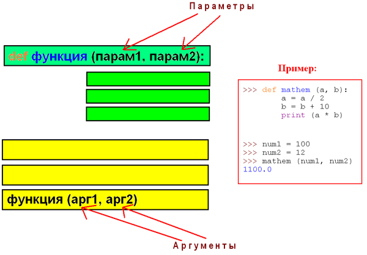

АРГУМЕНТЫ VS ПАРАМЕТРЫ
При работе с функциями мы часто путаем аргументы с параметрами. Разница заключается вот в чем:
Когда конструируем функцию, мы закладываем в ней параметры.
Когда используем функцию, т.е. вызываем ее, мы передаем в нее аргументы.
ПАКЕТЫ
Пакет (package) в Python -- это папка, в которой содержатся другие папки, модули, и в обязательном порядке файл __init__.py.
Пакеты необходимы для формирования пространства имён (namespace). Пространство имён -- это группа модулей, объединенных одним именем. Пакеты удобны тем, что они позволяют нам избежать проблем, которые могут возникнуть при наличии модулей с одинаковыми названиями.
Для наглядности я создал небольшой пакет, который имеет следующую структуру:
├── currency
│ ├── currency_converter.py
│ └── __init__.py
├── __init__.py
└── temperature
├── __init__.py
└── temperature_converter.py
Т.е. файл __init__.py, папки currency и temperature. Каждая из папок содержит файлы __init__.py, currency_converter.py, __init__.py, temperature_converter.py соответственно.
Для того, чтобы попробовать поработать с данным модулем, давайте распакуем скачанный архив и распакуем его, и рядом с папкой converter (не внутри нее) создадим файл conv.py и наберем следующий код:
from converter.currency.currency_converter import (
from_kgs_to_usd as kgs_usd,
from_usd_to_kgs as usd_kgs
)
from converter.temperature.temperature_converter import from_fahrenheit_to_celsius as f_to_c
kgs_4700_to_usd = kgs_usd(4700)
print(kgs_4700_to_usd)
usd_30_to_som = usd_kgs(30)
print(usd_30_to_som)
fahr_to_celsius = f_to_c(120)
print(fahr_to_celsius)
В данном коде мы импортировали функции from_kgs_to_usd и from_usd_to_kgs из модуля currency_converter, который находился внутри пакета currency, который в свою очередь находится внутри пакета converter. Но вместо настоящих названий функций, мы использовали псевдонимы kgs_usd и usd_kgs (чтобы было короче). Аналогично импортировали from_fahrenheit_to_celsius в качестве f_to_c.
Задачи:
Создайте пакет calc, состоящий из модулей square.py и cube.py. В них должны быть функции calculate_square (принимает число, возвращает его квадрат) и calculate_cube (принимает число, возвращает его куб), соответственно.